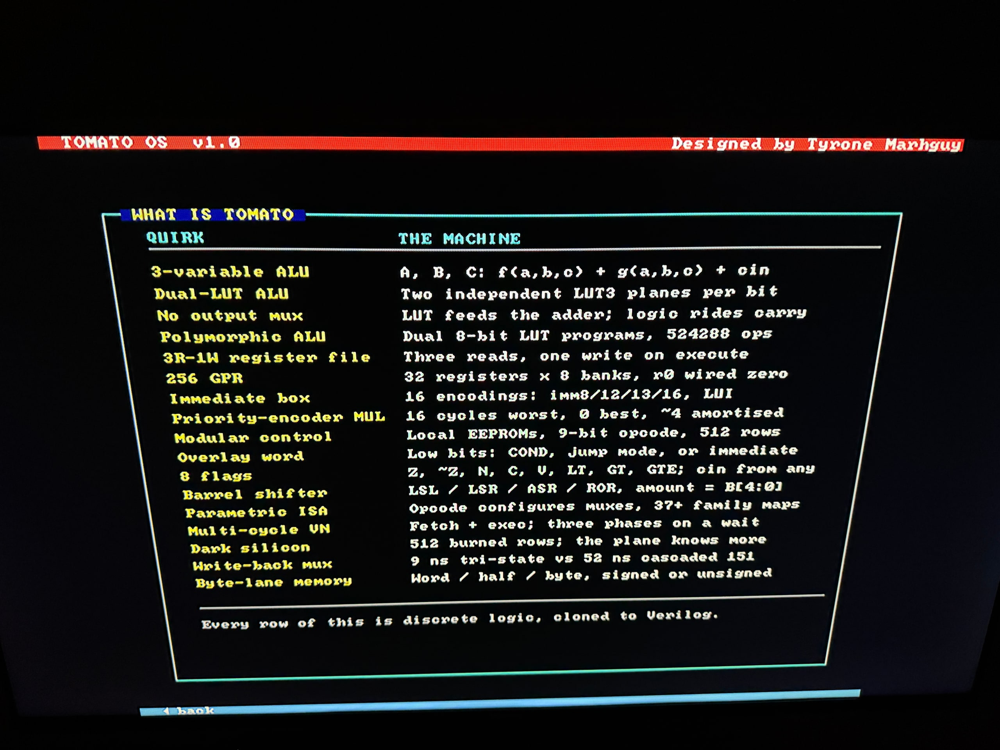
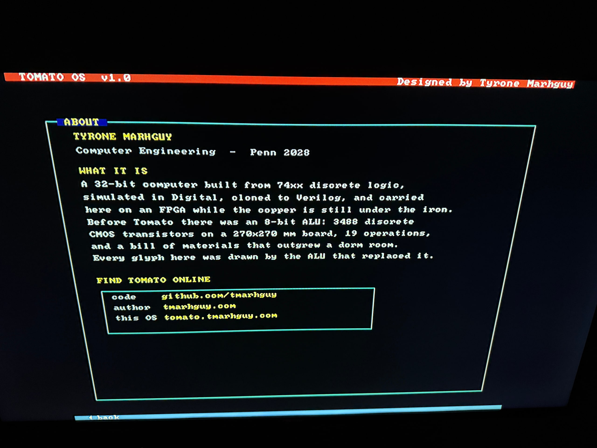

~2.3k
lines of assembly
Tomato OS
Desktop, chrome, games — one source the benches pin.
Inside Software · OS · assembler · vocabulary Vol. 32
Software
The machine has a language. The language has tools. The tools boot a desktop on HDMI — about 2,300 lines of Tomato assembly, every glyph a row of tomato.v1.csv.
Dual-LUT copper is why Tomato is odd. The OS is why you can sit someone in front of a monitor and show them the machine. Boot splash, desktop, menu, a seventeen-row quirk table, Fibonacci, Snake, Tetris, Racer, About — burned into data memory and scanned out as an 80×60 text field.
The display is tile RAM the CPU paints. Scanout only reads it. What is Tomato is the architecture writeup running on the same datapath it describes.
Three files, three jobs. Keep them apart.
| Layer | What it is | Where |
|---|---|---|
| Silicon language | 512-row microcode ROM · ~51 burns | tomato.v1.csv |
| Assembler vocabulary | 19 pseudos that expand into burns | tomato.v1.pseudo.csv |
| Assembler | Two-pass · CSVs are the opcode table | software/assembler.py |
| Tomato OS | Desktop, menu, six screens, four games | software/os/tomato_os.s |
| Proof | Icarus · boot · menu · games | make -C hardware/fpga/core test |
CALL, BEQZ, and the rest live in the pseudo CSV. Add a row, run --selftest, keep the burned image identical. The OS source gets clearer; the ROM does not grow. How that landed →
Five Nexys buttons. Center is Enter. Up and down move the highlight; left goes back; left and right steer in the games. One press is one keycode — after a bench that counted hundreds of repeats from a single push and forced the edge fix.
| Screen | Job |
|---|---|
| What is Tomato | Seventeen quirks, two columns |
| Fibonacci | Integer demo; 7-seg follows writeback |
| Snake / Tetris / Racer | Games that stress tile paint, timing, keypad |
| About Tomato | Name, thesis, links |
On the glass




LA assembles to ADDI rd, r0, addr, so labels it names stay under 0x1000. Code and strings can sit higher. A .word label holds the full address; puts prints from anywhere. Quirk text and the racer use that: pointers low, bulk high.
Tomato keeps the three-variable ALU, dual LUT planes, no output mux, 256 GPRs, and an overlay that maps other encodings onto muxes. The software stack makes that readable on a monitor. Palette swatch, font chart, keypad test, and memory map came out of the menu once bring-up was done — visitors do not need them.
~2.3k
lines of assembly
Desktop, chrome, games — one source the benches pin.
19
pseudos
CALL, BEQZ, LI expand into burns. ROM stays put.
80×60
text field
Tile RAM plus scanout. Games stay in software.